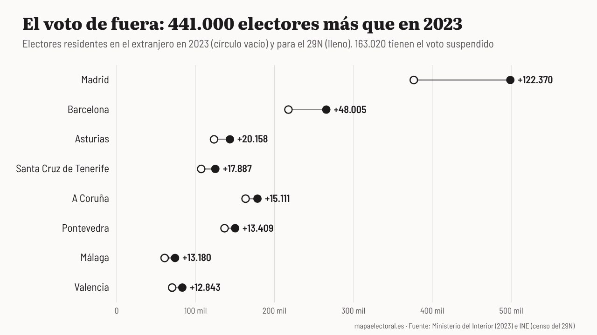

Actualidad · Las papeletas que llegan de fuera · España
El Supremo deja sin voto a 163.020 nacionalizados por la ley de nietos: en 2023, el voto exterior ya le dio al PP un escaño del PSOE en Madrid
El voto de fuera cambió el último diputado de Madrid por menos de 200 votos de cociente. Para el 29N, el censo de residentes en el extranjero ha crecido un 19%, y más de una cuarta parte del aumento está en Madrid.
Por Nacho G. del Álamo ·

Cada párrafo lleva una etiqueta: dato (cifra comprobable con las fuentes), patrón (relación que se repite, sin afirmar la causa), hipótesis (explicación posible, sin dos fuentes independientes) o contexto (hechos y declaraciones publicados por otros, enlazados). Cómo verificamos
ContextoEl Tribunal Supremo mantuvo el 12 de octubre la suspensión del voto de los nacionalizados por la ley de nietos que no acrediten el exilio de sus antepasados. La decisión, por cinco votos a uno, rechazó el recurso de la Abogacía del Estado, según El Independiente. Los afectados son 163.020 electores inscritos en el censo de residentes en el extranjero, según la cifra de la Abogacía del Estado que recoge Que.es. La suspensión la pidió Vox y la adoptó el tribunal de forma cautelar el 10 de septiembre.
ContextoEl Supremo justificó entonces la medida por un «peligro fundado, real y serio de poder afectar gravemente a la objetividad y transparencia del proceso electoral», según Efe. El Defensor del Pueblo ha recurrido en amparo al Constitucional, y Vox ha pedido que no se admita el recurso por «prematuro»: el Supremo tiene abierto hasta el 22 de octubre el plazo para que los afectados presenten alegaciones.
ContextoHe querido medir cuánto pesa ese voto con los datos que ya existen. Interior cuenta el voto que llega del extranjero en cada provincia como si fuera un municipio más, el 999. Con los resultados de julio de 2023 se puede ver quién lo recibió, cuánta gente votó y si cambió algún escaño.
DatoCambió uno. En 2023, solo con el voto emitido en España, el último de los 37 escaños de Madrid era del PSOE: su undécimo cociente, 90.381 votos, superaba por 120 al decimosexto del PP. El voto exterior de Madrid dio al PP 19.006 votos y al PSOE 10.411. Con esos votos sumados, el PP pasó por delante, y el escaño cambió de manos.
ContextoDos profesoras de la Universidad Pontificia Comillas, María Isabel Álvarez Vélez y María Corres-Illera, estudiaron aquellas elecciones y el escaño de Madrid, que acabó en el Supremo y el Constitucional. Su conclusión sobre el resto del mapa:
«En las elecciones celebradas en julio de 2023 el voto CERA pudo alterar el reparto de un último escaño en nueve provincias, donde los repartos fueron muy ajustados»
ContextoNo era la primera vez. Las mismas autoras recuerdan que en noviembre de 2019 el PP le quitó al PNV el último escaño de Bizkaia tras el recuento del voto exterior, cuando la noche electoral el PNV lo tenía por 163 votos.
Quién recibe el voto de fuera
DatoEn 2023, el voto exterior no se pareció tanto al de dentro como se suele pensar. El PP sacó lo mismo fuera que dentro, un 33%. El PSOE, contando al PSC y a sus otras federaciones, sacó el 29% fuera frente al 31,7% dentro. Sumar sacó más fuera, el 14,8% frente al 12,3%. Y Vox, menos: el 11,2% frente al 12,4%.
Ver la tabla
DatoLo que sí fue muy distinto es la participación. Votaron 208.431 de los 2.328.260 inscritos en el extranjero, el 9%. Dentro de España votó el 70%. En Madrid votó el 11,9%.
Un censo que ha crecido un 19%
DatoPara el 29N, el censo de residentes en el extranjero es más grande. El INE cuenta 2.769.645 electores fuera, el 7,15% de todos. En 2023 eran 2.328.260, según los datos de Interior. Son unos 441.000 más, un 19%. Argentina sola tiene 524.852, unos 90.000 más que en 2023, según Público y agencias.
DatoMadrid es la provincia donde más ha crecido: de 376.504 a 498.874 electores en el extranjero, 122.370 más, un 32,5%. Es el 27,7% de todo el aumento, más de una cuarta parte. Le siguen Barcelona, con 48.005 más, y Asturias, con 20.158.
Ver la tabla de las 52 provincias
HipótesisNo se puede saber con estos datos qué parte de ese aumento son nacionalizados por la ley de nietos. Ni Interior ni el INE publican cuántos de los 163.020 suspendidos hay en cada provincia, y el censo crece también por otras razones, como la emigración.
Lo que dicen los protagonistas
ContextoPedro Sánchez lo convirtió en tema de precampaña en Ponferrada, el 11 de octubre. Pidió al Supremo que frenara lo que llamó un «intento de atropello» y dijo que «en democracia el derecho al voto no se prohíbe», según Efe:
«los nietos de los exiliados del franquismo no van a poder votar»
ContextoVox celebró el auto como una «gigante victoria judicial». Jorge Buxadé, su jefe de delegación en el Parlamento Europeo, sostuvo que «no se puede aceptar una alteración del censo electoral» y llamó a votar: «El 29 de noviembre todos a votar y a votar en las urnas solo los españoles, sin fraude y sin alteraciones del censo», según Europa Press. El Supremo no ha hablado de fraude: lo que ha decidido es una medida cautelar.
Lo que la cuenta no dice
HipótesisSi los 163.020 suspendidos hubieran votado como votó el exterior en 2023, con un 9% de participación, habrían sido unas 14.700 papeletas en toda España. Es poco al lado de los más de 24 millones de votos de 2023, pero el escaño de Madrid se decidió por bastante menos. No sé cómo votarían ni en qué provincias, y por eso esta cuenta no permite decir a quién perjudica la suspensión.
DatoPara el 29N, la cifra que importa es la del margen. En 2023, el voto exterior cambió un escaño, el último de Madrid, y pudo cambiar otros en nueve provincias. El censo de fuera tiene ahora 441.000 electores más que entonces, y 163.020 de ellos no podrán votar salvo que acrediten el exilio de sus antepasados o el Constitucional diga otra cosa.
Explora el mapa por sección · Más piezas: Dónde puede costar más la división a la izquierda · El censo de los mayores
Método y fuentes
- Qué se compara
- El voto de los residentes en el extranjero (CERA) en las generales de 2023 por provincia frente al voto emitido en España, el reparto del último escaño de Madrid con y sin ese voto, y el censo de residentes en el extranjero de 2023 frente al del 29N.
- Límites
- Interior asigna el voto exterior a cada provincia como municipio 999; se usa así. El censo de 2023 es el que figura en los ficheros de Interior y el de 2026 el que publica el INE, que pueden no medir exactamente lo mismo. No hay datos públicos de cuántos de los 163.020 suspendidos hay en cada provincia ni de cómo votarían, así que no se puede calcular a quién afecta la suspensión. Los porcentajes de PSOE incluyen al PSC y a sus federaciones, y los de Sumar todas sus marcas; el PP no incluye a UPN.
- Cómo se calcula
- Porcentajes sobre voto válido (votos a candidaturas más votos en blanco), salvo la participación, que es sobre el censo. Cifras reproducibles con los scripts del expediente de la pieza. Metodología de Actualidad · Metodología del Atlas
- Fuentes
- Ministerio del Interior, resultados electorales por mesa y voto CERA (municipio 999), vía pollspaindata
- INE, Elecciones a Cortes Generales de 29 de noviembre de 2026, nota de prensa (9-10-2026)
- El Independiente, El Supremo suspende el voto de los nacionalizados por la ley de nietos (12-10-2026)
- Que.es, El Supremo deja sin voto el 29N a 163.020 nacionalizados (13-10-2026)
- The Objective (Efe), Vox pide al Constitucional que inadmita el recurso de Gabilondo (18-10-2026)
- Infobae (Efe), Sánchez pide frenar el «intento de atropello» (11-10-2026)
- Infobae (Europa Press), Vox celebra que el Supremo le dé la razón (12-10-2026)
- Público (agencias), Más de 1,26 millones de electores se incorporan al censo (9-10-2026)
- Álvarez Vélez y Corres-Illera, La relevancia del voto CERA, Revista de Derecho Político 120 (2024)
- Autoría
- Nacho G. del Álamo
- Revisión de datos y texto
- Nacho G. del Álamo, 20 de octubre de 2026
- Publicado · actualizado
- 20 de octubre de 2026 · 20 de octubre de 2026
- Correcciones
- 20-10-2026: el aumento del censo exterior en Madrid (122.370) es el 27,7% del total (441.385), más de una cuarta parte, no «casi un tercio». Además, la lista de fuentes decía «sin voto exterior (CERA)», pero los cálculos sí incluyen el voto exterior, como indican los gráficos y los límites. Se corrige la fuente. Las cifras no cambian. También se corrige la nota de método, que decía «votos a candidaturas»: los porcentajes son sobre voto válido, como indica el gráfico, y la fuente del gráfico de Madrid, que ahora cita el voto CERA.
Serie «Camino al 29N»: 83 piezas
- Del 12% al 2,9% y de vuelta al 9,5%: el nacionalismo gallego que deja Beiras
- La Barcelona que tendría que reconquistar Colau: los comuns ganaban en 837 secciones y ahora en 23
- El 29N repite mes con mal recuerdo: el último noviembre dejó la participación más baja de la democracia
- Con Puigdemont de candidato, Junts duplica su voto: del 11% en el Congreso al 22% en el Parlament
- Sumados, ERC y los comuns habrían sido la lista más votada en 1.431 secciones de Cataluña en 2023; por separado, en 232
- Andalucía vota casi diez puntos más al PSOE cuando elige al Gobierno que cuando elige a la Junta
- La huelga del 11N apela a los barrios que menos votan: donde más paro hay, la participación cae al 61%
- En Madrid, el PSOE saca diez puntos más cuando se vota al Gobierno que cuando se vota al alcalde
- El espacio a la izquierda del PSOE fue el más votado en 9.810 secciones en 2015; en 2023, en 182
- Vox saca casi lo mismo donde uno de cada tres vecinos nació fuera que donde casi nadie lo hizo
- Tras el saludo gélido de Sánchez en el 12‑O: en Madrid, el PP de Almeida sacó más votos que el de Feijóo, con 85.000 votantes menos
- La aceituna de mesa, por debajo de coste: en sus dos grandes comarcas, el PP no ganó en ninguno de los 23 pueblos en 2023
- Qué provincias pueden decidir el 29N: en 17, el último escaño se resolvió en 2023 por menos de 5.000 votos
- Dónde puede costar más la división a la izquierda: en ocho provincias, Sumar ganó o perdió un escaño en 2023 por menos de 5.000 votos
- Vivienda, inmigración y economía: en el CIS de octubre la vivienda salta del 37,5% al 55,7% y ya es el problema más citado por los votantes de PP, PSOE y Sumar
- Abascal promete pagar las pensiones «como sea», pero Vox saca su peor resultado en los barrios más envejecidos: 9,8%, frente al 16,2% en los más jóvenes
- EAPN presenta su informe sobre pobreza y territorio: en los barrios más pobres se vota 15 puntos menos que en los más ricos, el doble de distancia que en 2004
- Once ministros en las listas del PSOE: con los votos de 2023, el puesto más ajustado es el de Ana Redondo en Valladolid, que caería si el PSOE perdiera el 17% de sus votos
- Ciudadanos se suma a Democracia 21 en Madrid y Barcelona: en los barrios madrileños donde Cs fue más fuerte en 2019, el PP pasó del 18,2% al 49,2% en 2023
- El CEO da a Aliança Catalana hasta 25 escaños: en el Parlament de 2024 sacó el 3,8%, pero el 24,9% en el Ripollès y el 7,8% en los pueblos de menos de 1.000 electores
- Cómo votó tu calle: una de cada cuatro secciones censales eligió en 2023 un ganador distinto al de su municipio
- La calle que parte el voto: el PP sacó el 55,9% a un lado de la avenida de Francia, en València, y el 16,4% al otro
- Madrid llega al 29N teñida de azul: el PP ganó en 1.603 de sus 2.450 secciones y el PSOE solo resiste en cuatro distritos del sur
- Barcelona pasó del amarillo al rojo: ERC ganó en 563 secciones en 2019 y en ninguna en 2023
- València borró a Compromís del mapa: ganaba en 101 secciones en 2019 y en 15 en 2023
- Sevilla tiene dos mapas: el PP ganó en votos el 23J, pero el PSOE fue el primero en 286 de sus 521 secciones
- Zaragoza, empate barrio a barrio: el PSOE ganó en 250 secciones y el PP en 245, y 53 se decidieron por menos de dos puntos
- En Málaga, la renta decide quién vota: el 46,7% en los barrios más pobres y el 80,6% en los más ricos
- Murcia, de verde a azul: Vox ganó en 164 secciones en 2019 y en una en 2023
- Palma, la gran ciudad que menos vota: el 62,5% en 2023, y menos del 35% en algunas secciones del este
- Montse Mínguez dimite y deja la lista de Lleida: el PSC duplicó allí su voto en 2023 y le ganó el cuarto diputado al PP por unos 3.500 votos
- El Rey visita las dos ciudades que menos votan: en Melilla votó el 49,8% en 2023, y en una sección de la periferia, el 19%
- El Senado de 2023: 120 senadores para el PP con un tercio de los votos
- Un diputado cuesta 25.300 votos en Teruel y 97.500 en Madrid: el precio del escaño, provincia a provincia
- 1,9 millones de votos no eligieron a nadie en 2023: en Teruel, Lleida y Soria, uno de cada tres
- Feijóo y Sánchez chocan por las pensiones en un censo con 10,2 millones de electores de 65 años o más: superan a los de 18 a 34 en 49 de las 52 provincias
- El CIS de Tezanos da al PSOE 11,8 puntos de ventaja: en las tres generales desde 2019 sobrestimó su margen sobre el PP entre 1 y 6,9 puntos
- Rufián admite «He fracasado»: con los votos de 2023, ERC y Sumar juntos habrían sacado un solo diputado más en Cataluña, y por 126 votos
- Ocupación: en las provincias con más demandas ante los juzgados, Vox sacó el 15,9% en 2023, frente al 11,5% en las que menos
- Frente Amplio y Podemos solo irán juntos en cinco provincias: en las otras 47, Sumar sacó 26 de sus 31 diputados en 2023
- Estás aquíEl Supremo deja sin voto a 163.020 nacionalizados por la ley de nietos: en 2023, el voto exterior ya le dio al PP un escaño del PSOE en Madrid
- PSOE y Frente Amplio, juntos al Senado: con los votos de 2023, su lista habría ganado al PP en 17 provincias donde este sacó tres senadores
- Albiol, cabeza de lista del PP por Barcelona: en Badalona sacó el 55,7% en las municipales de 2023 y dos meses después el PP se quedó en el 16,6%
- Dimite la lista del PSOE en Palencia tras imponer Ferraz a Martínez Seijo: en 2023 al partido le faltaron 7.097 votos para un segundo diputado
- Nueva Canarias, Podemos, IU y Sumar se unen en Canarias: con los votos de 2023, la suma habría pasado de uno a tres diputados
- Separados el 29N, como en 2015: con los votos de aquel año, una sola papeleta de Podemos e IU habría sacado 86 diputados, no 71
- Delgado contra Montero en Madrid: con los votos de 2023, Podemos necesitaría uno de cada cinco votos de Sumar para sacar escaño
- PP y Vox negocian el Senado: con los votos de 2023, sumar a Vox le devolvería a la derecha 19 provincias frente a la lista de PSOE y Frente Amplio
- Trump dice que España fue «invadida»: los vecinos nacidos fuera pasaron de 6,5 a 10 millones en siete años, y donde más crecieron Vox no sacó más votos
- Feijóo y Saiz se pelean por la hucha de las pensiones: donde más pesan en la renta, PP y PSOE se llevaron el 72,8% del voto, casi diez puntos más que donde menos
- Abascal llama a Galicia «espina clavada»: Vox no llegó al 5% en seis de cada diez secciones gallegas en 2023, y en el resto de España, en una de cada nueve
- El 29N deja en el aire la subida de tres millones de empleados públicos: en Teruel o Soria hay el doble por habitante que en Barcelona, y donde más pesan, Sumar sacó un tercio menos
- El Constitucional deja sin voto a los nietos: los españoles adultos de América Latina crecen casi cinco veces más rápido y uno de cada tres está inscrito en Madrid
- En los barrios con más autónomos, el PP saca 13 puntos al PSOE
- Seis escaños que se decidieron por menos de mil votantes
- Vox nunca ha llegado al 12% en los barrios de jubilados
- Vox no gana en los barrios obreros: saca casi lo mismo donde viven peones que donde viven directivos, y el que sube es el PSOE
- Donde abundan los despachos, el PP saca siete puntos más y el PSOE, cinco menos
- Donde más preocupa la vivienda, más se votó a Sumar
- La inmigración preocupa más, salvo a los votantes de Vox
- Donde más preocupa la inmigración, más votó Vox, salvo en Cataluña
- En los barrios de rentistas, el PP saca el 51% y el PSOE, el 21%
- El PP ya gana a Junts en seis de cada diez barrios catalanes
- Sánchez en La Revuelta: entre los hombres jóvenes, Vox casi dobla al PSOE
- CHA se retira en Teruel: la única vez que la izquierda tuvo votos para un escaño fue en 2015, y fue dividida
- Huelva, Almería y Jaén: más de la mitad de sus asalariados cobró en 2024 menos de un salario mínimo al año
- Los 12 millones de la derecha que cita Iván Redondo solo existieron una vez: en 2011
- Feijóo y el aborto «en la pública»: 77% en Galicia, 0,5% en Madrid
- Mota del Cuervo, 1.243 a 1.243: los pueblos del empate y los del voto unánime
- Santa Cruz de Mudela, 874 a 873: los 185 pueblos que se ganaron por un voto
- El otro Clásico: en los barrios de renta media, el PP saca el triple de votos en Madrid que en Barcelona
- Así queda el mapa electoral de España antes del 29N: el PP ganó en 40 provincias y el PSOE, en 10
- Quién va con quién el 29N: Frente Amplio y Podemos, separados en 47 provincias; en 2015, juntos habrían sacado 15 diputados más
- Las provincias que deciden el 29N: 32 escaños se movían en 2023 con menos de 5.000 votantes, y el PP defiende 13
- Un voto en Santa Cruz de Mudela, 101 en Cantabria, 7.097 en Palencia: la semana en que el 29N se contó en márgenes
- Quién vota qué, barrio a barrio: el PP sube 21 puntos donde pesan las rentas del capital, el PSOE 15 donde abundan los peones y Vox solo se mueve con los jubilados
- A seis semanas del 29N: en 534 barrios de España no votó ni la mitad del censo, y tres de cada cuatro están entre los más pobres
- Ante el 29N: del Polígono Sur a la Cañada Real, en 78 de los 93 barrios donde más pesan las ayudas sociales no votó ni la mitad
- Con el PSOE andaluz en mínimos: Sevilla, Jerez y otros 170 municipios que votaron a la izquierda en todas las generales de 1977 a 2008 dieron en 2023 más votos a PP y Vox
- A cinco semanas del 29N: en la calle de los Hermanos García Noblejas, en Madrid, PP y PSOE se cambian de acera 12 veces, y el PP siempre gana en el lado con más renta
- Vox busca el voto de los barrios obreros: en la Región de Murcia, nueve de cada diez secciones pobres ya votan más a PP y Vox que a PSOE y Sumar
- Sevilla vota por barrios y Lugo, mezclada: el índice que mide qué capitales están partidas por el voto
- El PP saca 6 puntos al PSOE en las encuestas: ni el mayor fallo de la última década, el de 2023, daría el sorpasso que anuncia Iván Redondo
Más datos: elecciones generales del 29N de 2026: fecha y escaños por provincia · más piezas sobre participación y abstención.
Sigue leyendo
- EncuestasEncuestas de las elecciones generales del 29N: todas, con sus escaños, actualizadas cada día
- Los pueblos de los colonosLos pueblos que levantó Franco votan más a Vox que sus vecinos: en Tiétar, Rosalejo y Pueblonuevo de Miramontes pasó del 25 %
- Del balcón a la cárcelVic dio el 69 % a la Lliga en 1933 y hoy es la gran ciudad de Junts; L'Hospitalet dio el 77 % al Front d'Esquerres de Companys y hoy vota al PSC
- De las barricadas a las urnasMieres votó en masa dieciséis meses después de la revolución: el 86 % fue a las urnas y el 79 % eligió al Frente Popular
- ActualidadTodas las piezas de actualidad
- AtlasAtlas de las anomalías electorales